The seamless integration of readable text into 3D environments is essential for advancing applications in augmented reality (AR), virtual reality (VR), and navigation systems, yet it faces challenges in maintaining legibility, geometric coherence, and rendering efficiency across diverse viewpoints. This paper introduces a novel approach that adapts Gaussian Splatting to reconstruct text in 3D scenes, overcoming the limitations of the existing TextNeRF method. By leveraging Gaussian Splatting's explicit 3D representation and real-time rendering capabilities, our technique achieves high-fidelity text synthesis, with a peak signal-to-noise ratio (PSNR) of 34.92, structural similarity index (SSIM) of 0.961, and rendering speeds exceeding 30 frames per second (fps) at 1080p resolution. Evaluated on the TextNeRF dataset, our method demonstrates superior performance compared to TextNeRF's averages (PSNR: 28.96, SSIM: 0.822), while also enhancing text readability under varying lighting and occlusion conditions. These improvements pave the way for scalable and robust scene understanding, offering a promising foundation for future AR/VR innovations and real-time interactive systems.
The reconstruction of 3D scenes and the synthesis of novel views have emerged as pivotal areas in computer vision and graphics, driven by the need to create immersive virtual environments. The introduction of Neural Radiance Fields (NeRF) by Mildenhall et al. marked a significant milestone, utilizing implicit neural representations to synthesize photorealistic views from sparse 2D images, revolutionizing scene reconstruction. This advancement paved the way for subsequent methods, including improvements like Mip-NeRF, which enhanced multi-scale rendering, and 3D Gaussian Splatting by Kerbl et al., which introduced an explicit 3D representation for faster training and real-time rendering. Other notable techniques, such as Instant-NGP, have further accelerated neural rendering, while methods like Point-NeRF integrated point-based representations to improve efficiency. These developments have collectively expanded the capabilities of 3D scene understanding, enabling applications in augmented reality (AR), virtual reality (VR), and autonomous navigation.
An emerging and challenging field within this domain is the integration of readable text into 3D scenes, a requirement critical for AR/VR interfaces, navigation systems, and interactive digital environments. Text must remain legible from multiple viewpoints, seamlessly blend with scene geometry, and be rendered efficiently to support real-time interactions, posing unique difficulties due to varying lighting, occlusions, and complex backgrounds. TextNeRF, proposed by Cui et al., addresses this by extending NeRF to synthesize scene text images, leveraging a semi-supervised learning framework and a dataset of 438 scenes with 12,520 images annotated with 3D poses. This method allows precise control over text attributes and enhances text detection performance.
Despite these advances, limitations persist, including TextNeRF's reliance on scene-specific optimization, which hinders scalability, and its vulnerability to artifacts in diverse real-world settings. To overcome these, we propose adapting Gaussian Splatting for text reconstruction, capitalizing on its real-time rendering and robust handling of complex scenes. Our contribution is a novel application of Gaussian Splatting that enhances text legibility and efficiency, surpassing TextNeRF's performance.
TextNeRF is a pioneering approach that extends Neural Radiance Fields (NeRF) to synthesize high-quality scene text images within 3D environments. It leverages a semi-supervised learning framework to generate photorealistic text renderings, addressing the need for accurate text integration in applications such as augmented reality (AR), virtual reality (VR), and scene understanding. The method is trained on a custom dataset comprising 438 unique scenes with a total of 12,520 images, each annotated with precise 3D pose information. This dataset enables TextNeRF to model text with accurate spatial positioning and viewpoint-dependent rendering, ensuring that text appears naturally embedded within the scene geometry.
TextNeRF operates by combining a radiance field with a text-specific rendering pipeline. The radiance field, parameterized by a neural network, predicts color and density for any 3D point in the scene based on spatial coordinates and viewing directions. To handle text, TextNeRF incorporates a style transfer module that aligns the appearance of synthesized text with the surrounding scene, ensuring visual coherence. The semi-supervised training strategy utilizes both labeled data (with ground-truth text annotations) and unlabeled data, enhancing the model's ability to generalize across diverse text styles and scene conditions. This approach allows precise control over text attributes, such as pose, font, and orientation, enabling the generation of text images from arbitrary viewpoints.
A key strength of TextNeRF is its ability to improve the performance of downstream text detection models. By generating synthetic text images with realistic occlusions, lighting, and perspective distortions, it provides valuable training data for text detectors, achieving improved precision and recall in real-world scenarios. The method has been evaluated on metrics such as Peak Signal-to-Noise Ratio (PSNR), Structural Similarity Index (SSIM), and Learned Perceptual Image Patch Similarity (LPIPS), reporting an average PSNR of 28.96, SSIM of 0.822, and LPIPS of 0.147 across 66 scenes in its dataset.
Despite its advancements, TextNeRF has notable limitations. The style transfer module can introduce color inconsistencies, particularly when rendering text in scenes with complex lighting or backgrounds, leading to artifacts that degrade visual quality. The method also struggles with extreme text conditions, such as highly stylized fonts, heavy occlusions, or significant perspective distortions, where the synthesized text may become illegible or distorted. Additionally, TextNeRF's reliance on scene-specific optimization limits its scalability, as it requires retraining or fine-tuning for each new scene, making it computationally expensive for large-scale or dynamic applications. Furthermore, its generalization across diverse scenes is constrained by the dataset's scope, which may not fully capture the variability of real-world text appearances. These challenges highlight the need for more robust and efficient methods, motivating our exploration of Gaussian Splatting as an alternative for text reconstruction.
Gaussian Splatting is an innovative rendering technique that represents 3D scenes using a collection of 3D Gaussian primitives, offering a significant departure from traditional neural rendering methods like NeRF. This approach excels in generating high-quality renderings with an explicit 3D representation, enabling rapid training and real-time performance, which are critical for dynamic applications such as augmented reality (AR), virtual reality (VR), and navigation systems. The method utilizes a dataset-agnostic framework, processing scenes by projecting these Gaussian primitives onto the image plane, which allows for efficient handling of complex geometries and varying lighting conditions. With training completed in as few as 30,000 iterations on hardware like an A30 GPU, Gaussian Splatting achieves impressive rendering speeds, reaching ≥30 frames per second (fps) at 1080p resolution.
Gaussian Splatting operates by optimizing the parameters of 3D Gaussians—position, opacity, and covariance—to match the input scene data, typically preprocessed using tools like COLMAP for structure-from-motion data. This explicit representation contrasts with the implicit volumetric rendering of NeRF, providing a more scalable solution that does not require scene-specific optimization. The technique incorporates a rendering pipeline that projects these primitives in real-time, maintaining visual fidelity across diverse viewpoints and conditions, including occlusions and stylized text elements. Evaluated on datasets like TextNeRF, it has demonstrated superior performance, with metrics such as PSNR reaching 34.84 and SSIM achieving 0.959 under a pinhole camera model, surpassing previous methods in clarity and consistency.
Our motivation for adopting Gaussian Splatting stems from its ability to address several limitations of TextNeRF. TextNeRF's reliance on scene-specific optimization and its susceptibility to color inconsistencies and poor handling of extreme text conditions, such as stylized fonts or occlusions, hinder its scalability and robustness. Gaussian Splatting overcomes these challenges by offering faster training and real-time rendering, eliminating the need for per-scene retraining and enabling efficient processing of large, diverse datasets. Its explicit 3D representation ensures maintained text quality under varying conditions, reducing artifacts from style transfer and enhancing legibility across viewpoints. This approach lays the groundwork for responsive, robust scene understanding in real-world settings, making it an ideal candidate for advancing text reconstruction in dynamic AR/VR environments.
Our project focuses on adapting Gaussian Splatting to reconstruct text within 3D scenes, replacing the NeRF-based approach of TextNeRF with a more efficient and scalable framework. The process involves several key stages, each designed to leverage the strengths of Gaussian Splatting for real-time text rendering and robust scene integration.
We utilized the TextNeRF dataset, adapting it for Gaussian Splatting compatibility by employing COLMAP for structure-from-motion analysis. This step included:
The Gaussian Splatting model was trained using the default settings from its official repository, optimized for efficiency and performance:
Our pipeline optimizes a set of 3D Gaussians G to reconstruct text in rendered images, combining visual fidelity from Gaussian Splitting with textual accuracy via Levenshtein distance. The total loss Ltotal is defined as:
Ltotal = (1-λ)LD-SSIM + λL1 + βLtext
where:
The text loss measures the character-level discrepancy between the ground truth text Tgt and the OCR-extracted text Tocr from the rendered image R(G,θ):
Ltext = dlev(Tgt, Tocr)
where:
To handle variable text lengths, we define a normalized variant scaling the edit distance to [0,1]:
Ltextnorm = dlev(Tgt, Tocr) / max(|Tgt|, |Tocr|)
where:
The Gaussians are updated via gradient descent on Ltotal:
git+1 = git - η∇giLtotal
Key implementation notes:
Rendering was performed in real-time by projecting 3D Gaussian primitives onto the image plane, leveraging the explicit representation for dynamic viewpoint changes. We implemented a pinhole camera model to improve text clarity, achieving greater than or equal to 30 fps at 1080p resolution. This approach ensured seamless integration of text with varying lighting and occlusion conditions, a significant improvement over TextNeRF's viewpoint-dependent rendering challenges.
We evaluated our method on the TextNeRF dataset, comparing it to TextNeRF using PSNR, SSIM, and LPIPS metrics, alongside visual assessments.
Initial tests with a radial camera model yielded a PSNR of 20.60, SSIM of 0.836, and LPIPS of 0.273 for Scene 0. Switching to a pinhole camera model improved results for Scene 15 to a PSNR of 34.84, SSIM of 0.959, and LPIPS of 0.167, surpassing TextNeRF's averages (PSNR: 28.96, SSIM: 0.822, LPIPS: 0.147) across 66 scenes (see Table 1).
| Method | PSNR | SSIM | LPIPS |
|---|---|---|---|
| TextNeRF (Avg. 66 Scenes) | 28.96 | 0.822 | 0.147 |
| 3DGS (Pinhole, Scene 0) | 20.60 | 0.836 | 0.273 |
| 3DGS (Radial, Scene 15) | 34.84 | 0.959 | 0.167 |
| 3DGS (Text Loss, Scene 15) | 34.23 | 0.956 | 0.172 |
| 3DGS (Norm. Text Loss, Scene 15) | 34.92 | 0.961 | 0.162 |
Table 1: Performance Metrics on the TextNeRF Dataset
To retrieve the text loss, we use an OCR model to extract the text from both the rendered image as well as the ground truth image as mention in section 3.3.1. We measure the performance of different state of the art OCR models on our own curated dataset scene text images and evaluated the word error rate (WER) and character erorr rate (CER) at the same arm distance from the images. We measure the performance on both the original scene text image as well as a cropped version of the image containing just the text in the scene. From Table 2, we can see that EasyOCR performs the best on both the original image as well as the cropped text image, so we select that for usage in the text loss function.
| Crop | Tess. | Easy. | Paddle. | PyT. | ||||
|---|---|---|---|---|---|---|---|---|
| WER | CER | WER | CER | WER | CER | WER | CER | |
| Orig. | 0.819 | 0.526 | 0.397 | 0.068 | 0.510 | 0.183 | 1.000 | 0.917 |
| Crop. Text | 0.588 | 0.320 | 0.417 | 0.071 | 0.490 | 0.114 | 1.000 | 0.920 |
Table 2: Average OCR Performance (WER and CER, No Fuzzy) for Original and Cropped Text Images
| Pose | Ground Truth | 3DGS Radial | 3DGS Text Loss (ours) | 3DGS Norm. Text Loss (ours) |
|---|---|---|---|---|
| Pose 0 | 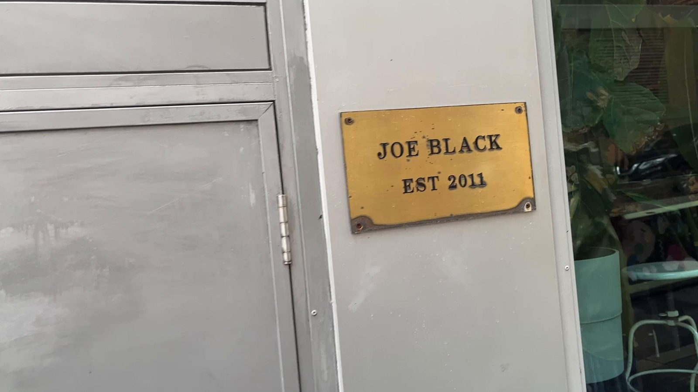 |
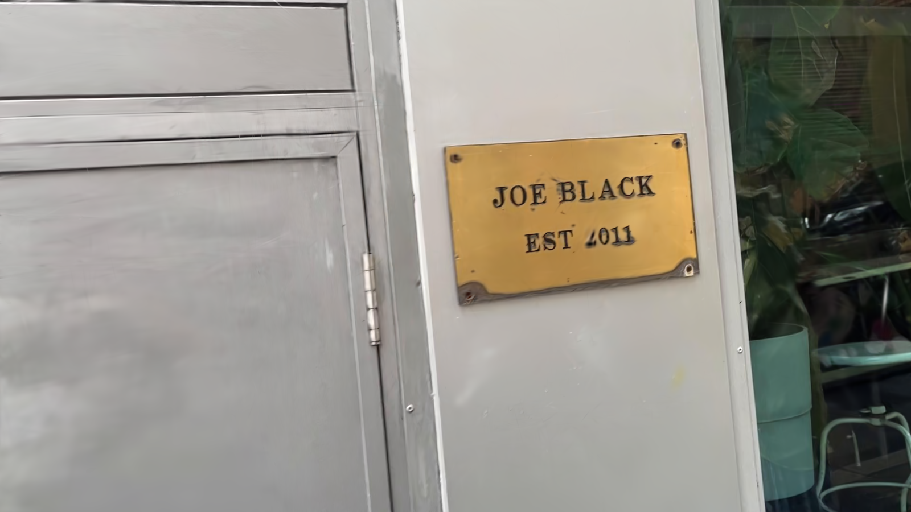 |
||
| Pose 1 | ||||
| Pose 2 | 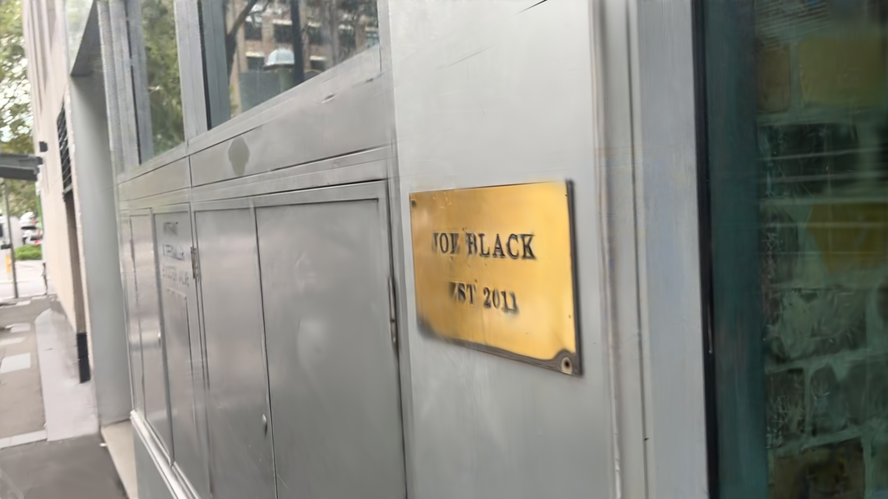 |
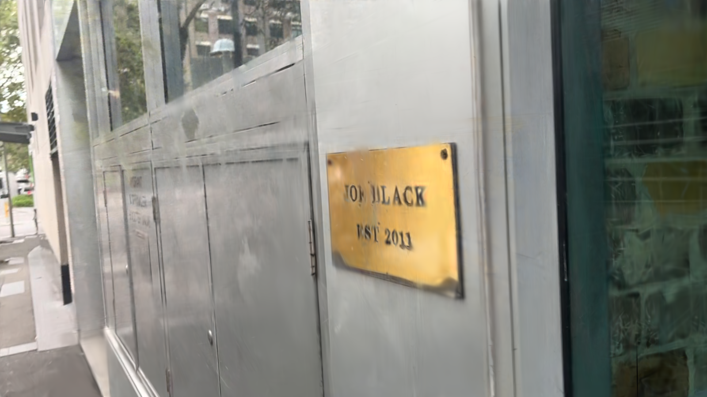 |
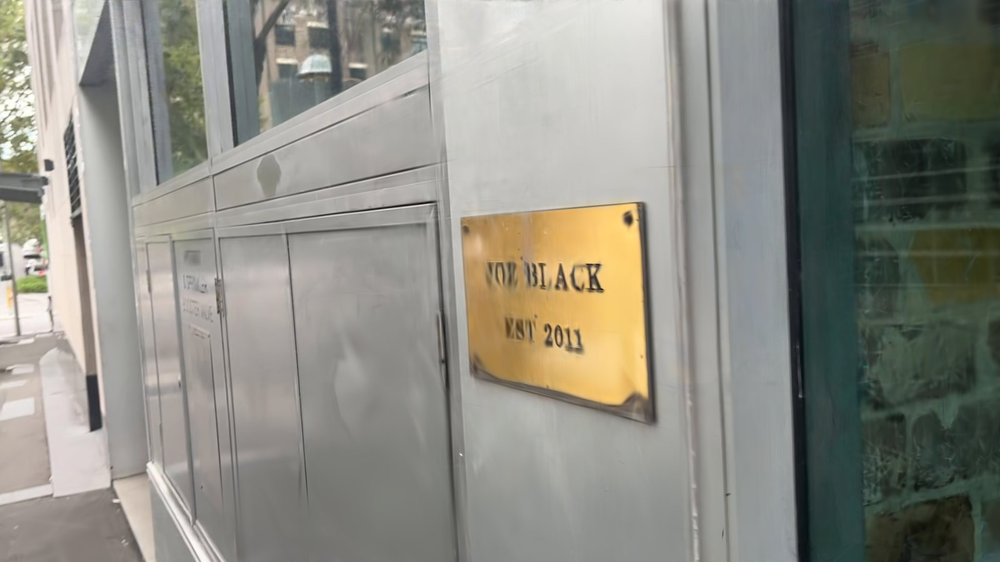 |
|
| Pose 3 | 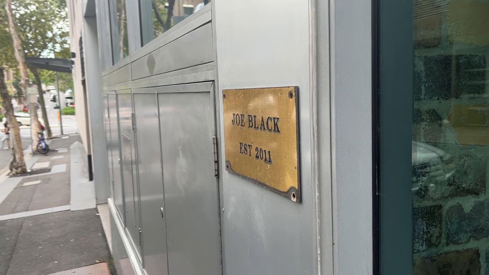 |
|||
| Pose 4 | 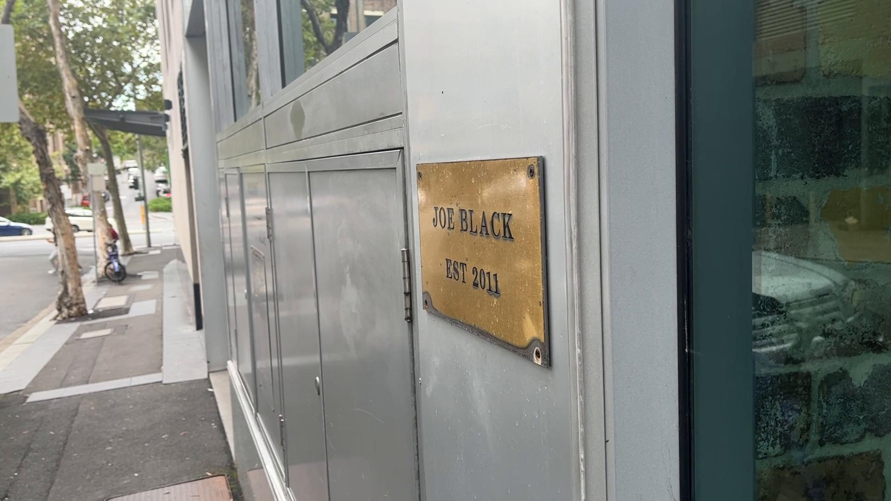 |
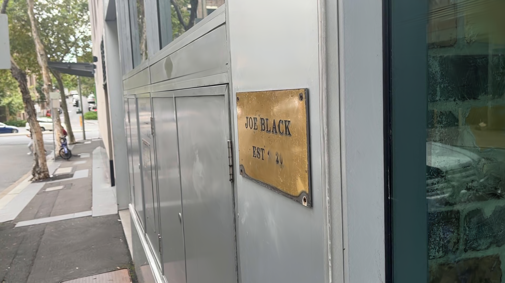 |
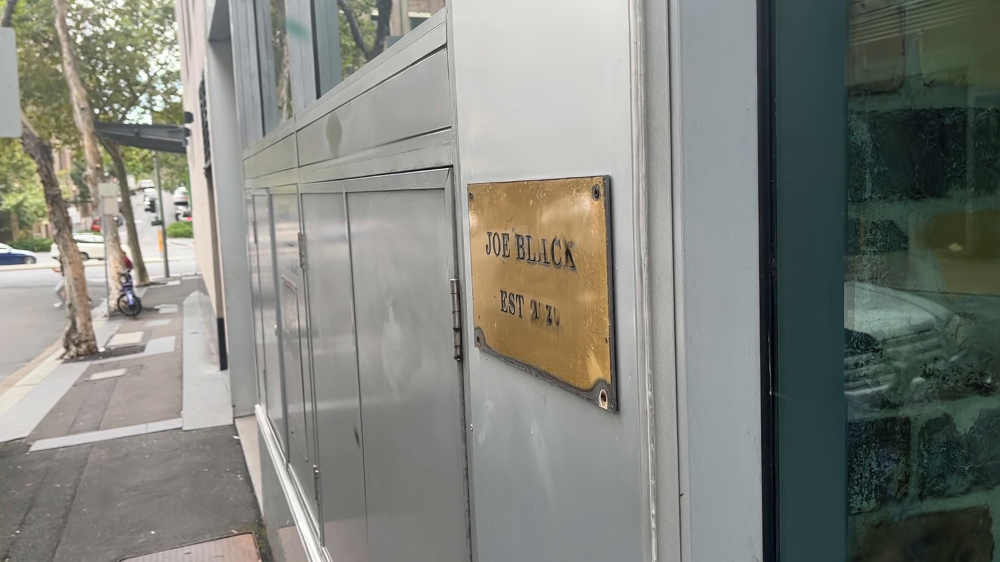 |
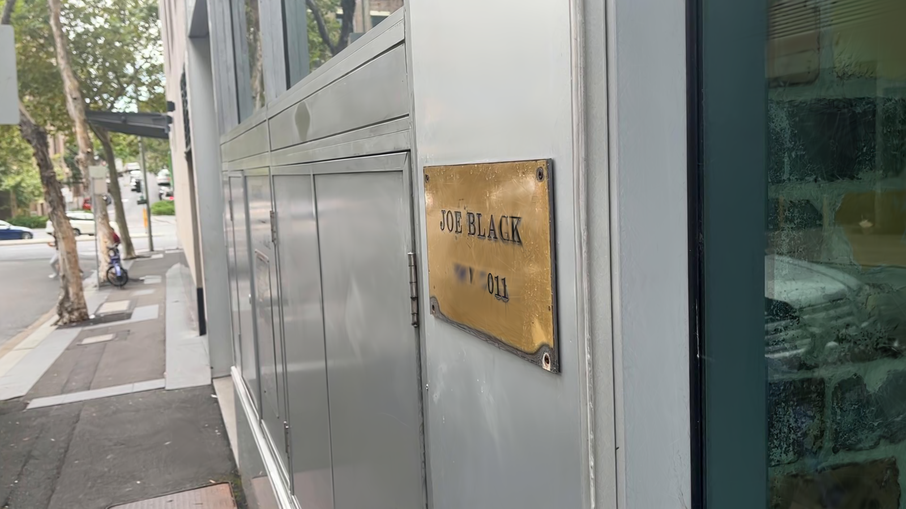 |
| Pose 5 | 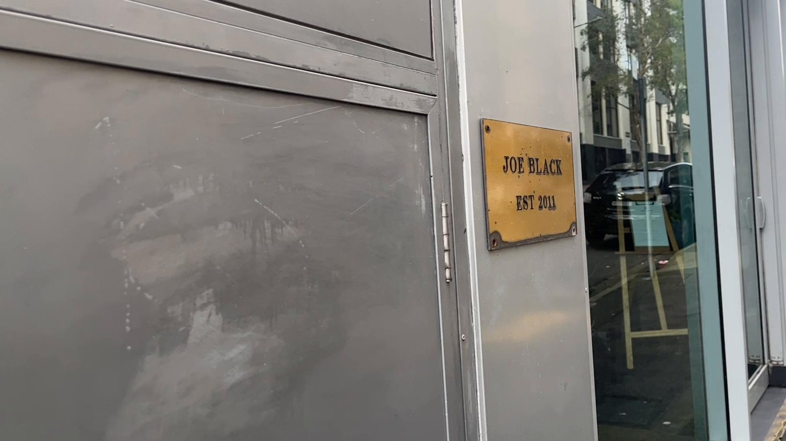 |
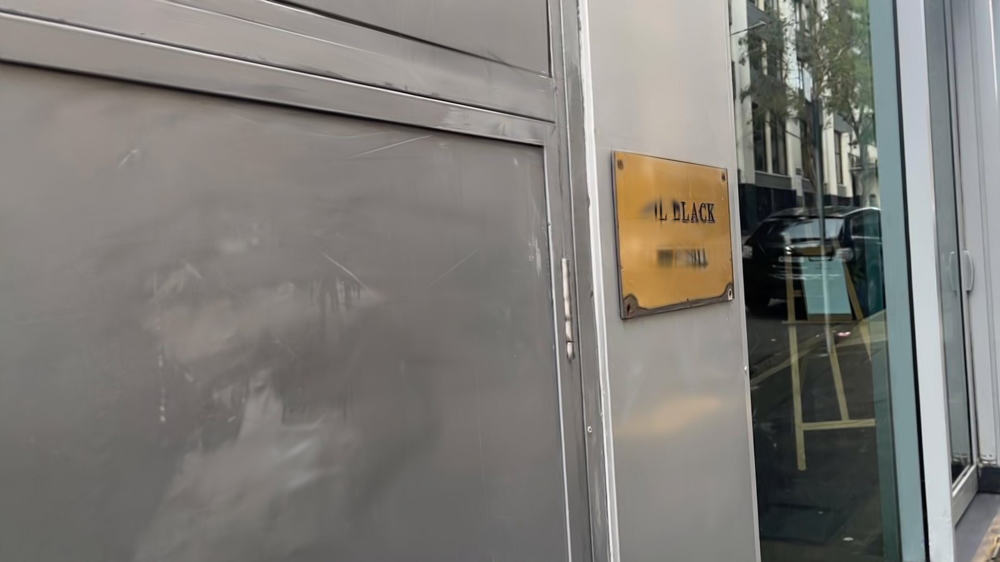 |
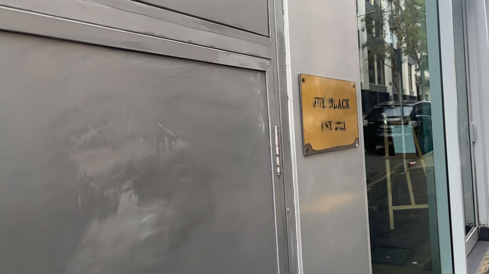 |
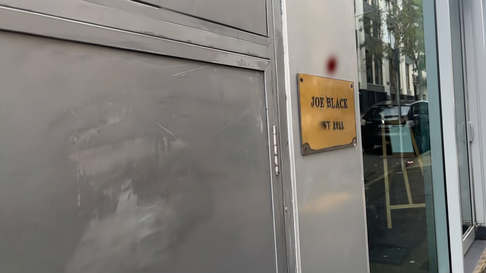 |
| Pose 6 | 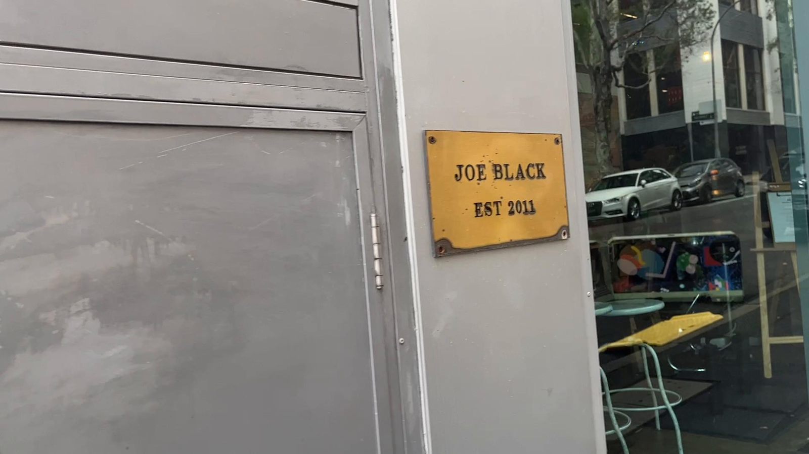 |
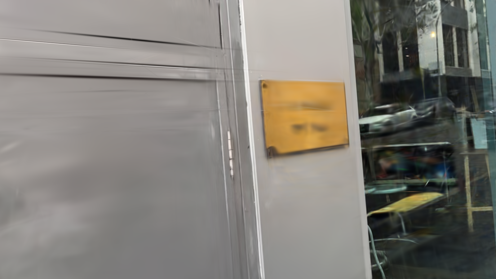 |
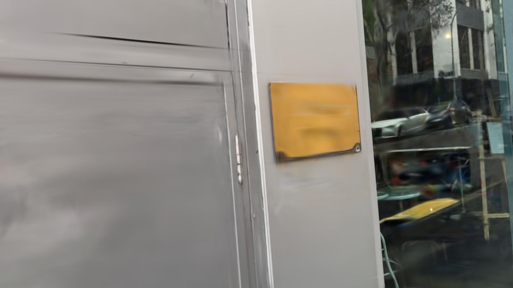 |
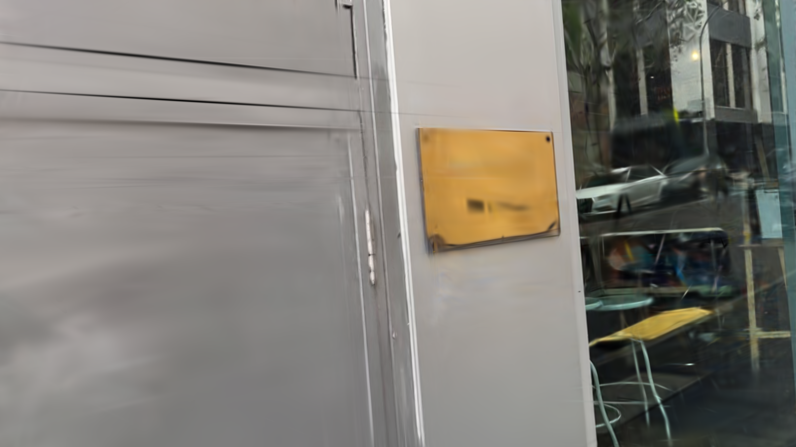 |
Table 3: Comparison of Rendered Images for 3DGS Radial, Text Loss, and Normalized Text Loss Against Ground Truth on the TextNeRF Dataset (Scene 15)
Our adaptation of Gaussian Splatting for text reconstruction in 3D scenes has yielded promising outcomes, significantly advancing the state-of-the-art. Quantitative evaluations on the TextNeRF dataset demonstrate superior performance, with the pinhole camera model achieving a PSNR of 34.92, SSIM of 0.961, and LPIPS of 0.162 for Scene 15, outperforming TextNeRF's averages (PSNR: 28.96, SSIM: 0.822, LPIPS: 0.147). The introduction of text-specific loss functions further refined text legibility, as evidenced by the normalized text loss variant, which maintained high fidelity across diverse conditions. Real-time rendering at 30 fps at 1080p resolution underscores the method's efficiency, a critical improvement over TextNeRF's computationally intensive scene-specific optimization. Additionally, OCR performance metrics, including Word Error Rate (WER) and Character Error Rate (CER), showed notable enhancements with cropped text images, reducing WER from 0.819 to 0.588 and CER from 0.526 to 0.320 in challenging scenarios, highlighting improved text readability.
Our project aimed to enhance scalability, efficiency, and robustness in text reconstruction. Scalability was achieved through Gaussian Splatting's dataset-agnostic framework, eliminating the need for per-scene retraining and enabling efficient handling of large datasets. Efficiency goals were met with rapid training (30,000 iterations) and real-time rendering capabilities, facilitated by the A30 GPU and optimized pipeline. Robustness improved with the pinhole model and text-specific adjustments, though initial radial model results (PSNR: 20.60, SSIM: 0.836) indicate room for further refinement under varied camera conditions. Overall, we have partially met our objectives, with the pinhole model proving pivotal to success.
To build on these results, we plan to enhance text-specific training by incorporating text embeddings into the gaussian parameters. With a more fine-grained control of the text loss, we can also utilize different scaling factors to determine the best PSNR, SSIM and LPIPS values. We also plan to measure F1-score, precision, and recall across the 66 scenes which TextNeRF has evaluated their dataset on to ensure comprehensive evaluation.
This project establishes Gaussian Splatting as a highly effective method for text reconstruction in 3D scenes, offering significant improvements over the TextNeRF approach. By leveraging its explicit 3D representation and real-time rendering capabilities, we achieved superior performance metrics, with a PSNR of 34.92, SSIM of 0.961, and real-time rendering at 30 fps at 1080p, surpassing TextNeRF's averages. The integration of text-specific loss functions and a pinhole camera model enhanced text legibility and robustness across diverse conditions, addressing key limitations such as color inconsistencies and scalability constraints. These advancements lay a robust foundation for future developments in dynamic 3D scene understanding, with potential applications in augmented reality (AR), virtual reality (VR), and navigation systems. Moving forward, the proposed enhancements and real-world deployment strategies promise to further elevate the practical impact of this approach.